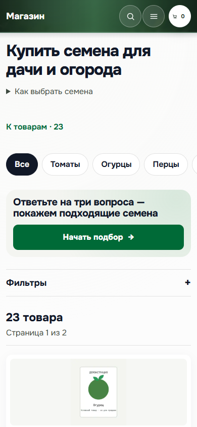
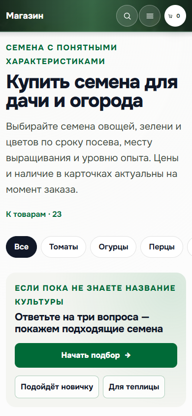
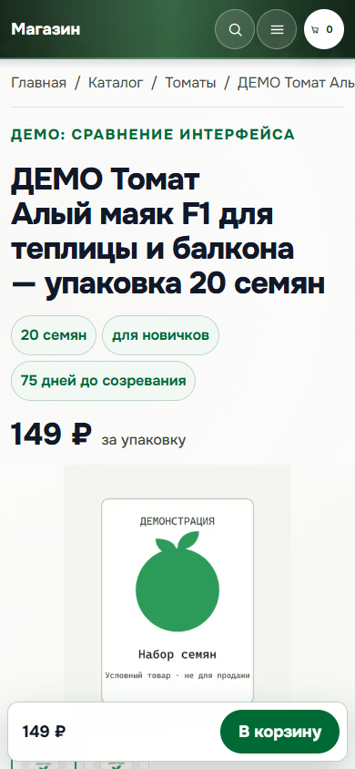
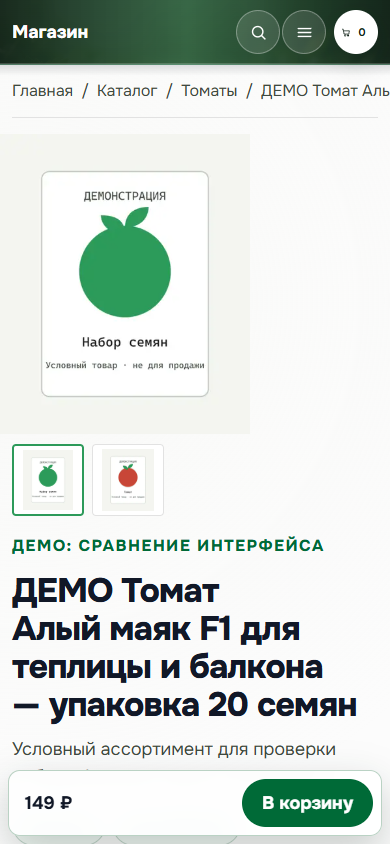
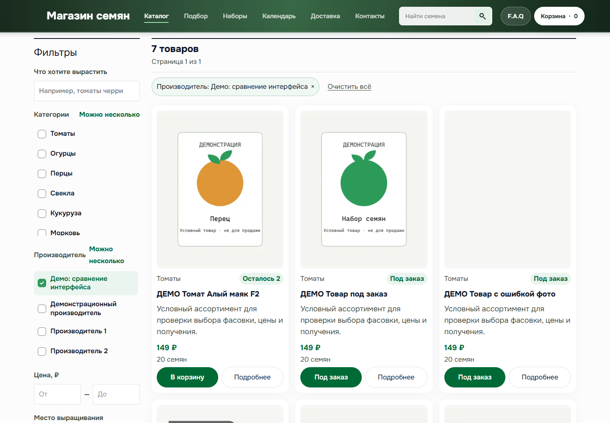
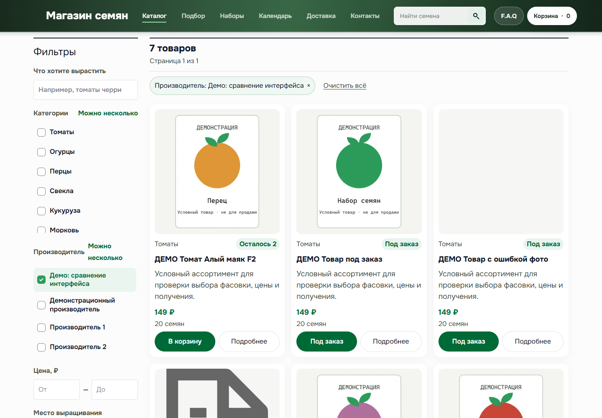

Предложения на текущем оформлении, 18 октября 2026. Это сравнение композиции до реализации. Одинаковые демонстрационные товары, условные цены и авторские иллюстрации из шаблона. Изображения не подтверждают свойства сортов.
А — компактный вход всегда: пояснение раскрывается, подбор заметен. Б — исходный развёрнутый вход при первом посещении; при поиске и фильтрах применяется компактный вариант. Рекомендация: А.


А — название, фасовка и цена перед фото. Б — компактное фото первым. Обе композиции сохраняют полное название и тот же блок покупки. Рекомендация: А, если важнее сразу распознать нужную фасовку.


Те же иллюстрации целиком, без обрезки. 4:5 крупнее показывает вертикальный пакет; 1:1 делает ряд ниже. Рекомендация: сравнивать по читаемости изображения; для текущих пакетов — 4:5.


Нажатие открывает полный снимок. Редактор реализуется одной композицией по согласованной программе: данные продажи вместе, затем медиа, описание и дополнительные поля.